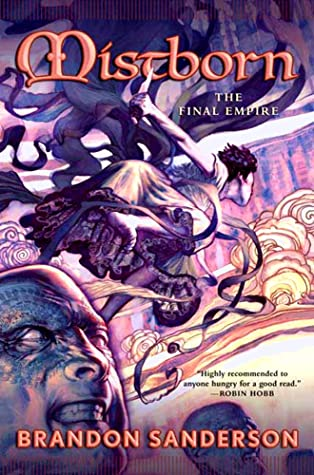

Sanderson has filled The Way of Kings with many varied and memorable characters. In addition to the main players already stated, notable standout mentions go to the members of Bridge Four who go on an amazing transformation during this book. These include Rock, Sigzil, Moash, and Teft. Another player I should mention is the mysterious and riddle-weaving Wit. I’m not an expert of Sanderson’s Cosmere, but Wit may be a character that transcends some of the author’s series. He has an extremely memorable scene with Kaladin and a flute-like instrument, and I’m extremely intrigued to see what part he will play in the overall story arc of The Stormlight Archive. >Although I may unfairly only be rating this 9/10, there is something truly spectacular on show here. I believe that in fifty years time.... The Stormlight Archive will be revered and alongside Malazan Book of the Fallen, A Song of Ice and Fire, and The Realm of the Elderlings, it will be used to show what the finest authors in this generation of fantasy when at the very top of their game could achieve. This series is always one of my first recommendations for someone wanting to try adult fantasy too so if you haven’t started this series yet, now is a perfect time.
This story takes place in a dystopian-esque world where there are brown leaves and a red sun, worshiping anyone but their dictator/god is treasonous and terrifying mist is everywhere. The general populace is scared of going out into this, but many nobles are Mistings, with the ability to burn Allomantic metals, granted to their ancestors by the Lord Ruler. Those with this power can either burn one or all of them- the latter group are known as Mistborns.... The peasant group- the Skaa- have been suppressed for a thousand years but a new revolt finally offers hope- led by a rare half-Noble and rarer Skaa Mistborn. The world building in this story is second to none, Sanderson really dives right into it. It’s confusing at first, but things start to fall together, although you definitely need to pay attention! My main problem was some of the fight/training scenes. They are written well, but just personally I struggle with those types of scenes generally and there are a lot of them in this first book as Vin’s learning about Allomancy. I didn’t know about the chart at the back until I’d finished, so I recommend anyone who hasn’t read it yet keepinga bookmark in that to prevent confusion!